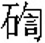

1
听说从今年起，陈源（即西滢）[4]教授要不管闲事了；这豫言就见于《现代评论》[5]五十六期的《闲话》里。惭愧我没有拜读这一期，因此也不知其详。要是确的呢，那么，除了用那照例的客套说声“可惜”[6]之外，真的倒实在很诧异自己之胡涂：年纪这么大了，竟不知道阳历的十二月三十一日和一月一日之交在别人是可以发生这样的大变动。我近来对于年关颇有些神经过钝了，全不觉得怎样。其实，倘要觉得罢，可是也不胜其觉得。大家挂上五色旗[7]，大街上搭起几坐彩坊，中间还有四个字道：“普天同庆”，据说这算是过年。大家关了门，贴上门神，爆竹毕剥砰

的放起来，据说这也是过年。要是言行真跟着过年为转移，怕要转移不迭，势必至于成为转圈子。所以，神经过钝虽然有落伍之虑，但有弊必有利，却也很占一点小小的便宜的。但是，还有些事我终于想不明白：即如天下有闲事，有人管闲事之类。我现在觉得世上是仿佛没有所谓闲事的，有人来管，便都和自己有点关系；即便是爱人类，也因为自己是人。假使我们知道了火星里张龙和赵虎打架，便即大有作为，请酒开会，维持张龙，或否认赵虎，[8]那自然是颇近于管闲事了。然而火星上事，既然能够“知道”，则至少必须已经可以通信，关系也密切起来，算不得闲事了。因为既能通信，也许将来就能交通，他们终于会在我们的头顶上打架。至于咱们地球之上，即无论那一处，事事都和我们相关，然而竟不管者，或因不知道，或因管不着，非以其“闲”也。譬如英国有刘千昭雇了爱尔兰老妈子在伦敦拉出女生，[9]在我们是闲事似的罢，其实并不，也会影响到我们这里来。留学生不是多多，多多了么？倘有合宜之处，就要引以为例，正如在文学上的引用什么莎士比亚呀，塞文狄斯呀，芮恩施[10]呀一般。
（不对，错了。芮恩施是美国的驻华公使，不是文学家。我大约因为在讲什么文艺学术的一篇论文上见过他的名字，所以一不小心便带出来了。合即订正于此，尚希读者谅之。）
即使是动物，也怎能和我们不相干？青蝇的脚上有一个霍乱菌，蚊子的唾沫里有两个疟疾菌，就说不定会钻进谁的血里去。管到“邻猫生子”[11]，很有人以为笑谈，其实却正与自己大有相关。譬如我的院子里，现在就有四匹邻猫常常吵架了，倘使这些太太们之一又诞育四匹，则三四月后，我就得常听到八匹猫们常常吵闹，比现在加倍地心烦。
所以我就有了一种偏见，以为天下本无所谓闲事，只因为没有这许多遍管的精神和力量，于是便只好抓一点来管。为什么独抓这一点呢？自然是最和自己相关的，大则因为同是人类，或是同类，同志；小则，因为是同学，亲戚，同乡，——至少，也大概叨光过什么，虽然自己的显在意识上并不了然，或者其实了然，而故意装痴作傻。
但陈源教授据说是去年却管了闲事了，要是我上文所说的并不错，那就确是一个超人。今年不问世事，也委实是可惜之至，真是斯人不管，“如苍生何”[12]了。幸而阴历的过年又快到了，除夕的亥时一过，也许又可望心回意转的罢。
2
昨天下午我从沙滩[13]回家的时候，知道大琦[14]君来访过我了。这使我很高兴，因为我是猜想他进了病院的了，现在知道并没有。而尤其使我高兴的是他还留赠我一本《现代评论增刊》，只要一看见封面上画着的一枝细长的蜡烛，便明白这是光明之象，更何况还有许多名人学者的著作，更何况其中还有陈源教授的一篇《做学问的工具》呢？这是正论，至少可以赛过“闲话”的；至少，是我觉得赛过“闲话”，因为它给了我许多东西。
我现在才知道南池子的“政治学会图书馆”去年“因为时局的关系，借书的成绩长进了三至七倍”了，但他“家翰笙”[15]却还“用‘平时不烧香，临时抱佛脚’十个字形容当今学术界大部分的状况”。这很改正了我许多误解。我先已说过，现在的留学生是多多，多多了，但我总疑心他们大部分是在外国租了房子，关起门来燉牛肉吃的，而且在东京实在也看见过。那时我想：燉牛肉吃，在中国就可以，何必路远迢迢，跑到外国来呢？虽然外国讲究畜牧，或者肉里面的寄生虫可以少些，但燉烂了，即使多也就没有关系。所以，我看见回国的学者，头两年穿洋服，后来穿皮袍，昂头而走的，总疑心他是在外国亲手燉过几年牛肉的人物，而且即使有了什么事，连“佛脚”也未必肯抱的。现在知道并不然，至少是“留学欧美归国的人”并不然。但可惜中国的图书馆里的书太少了，据说北京“三十多个大学，不论国立私立，还不及我们私人的书多”云。这“我们”里面，据说第一要数“溥仪先生的教师庄士敦[16]先生”，第二大概是“孤桐先生”即章士钊[17]，因为在德国柏林时候，陈源教授就亲眼看见他两间屋里“几乎满床满架满桌满地，都是关于社会主义的德文书”。[18]现在呢，想来一定是更多的了。这真教我欣羡佩服。记得自己留学时候，官费每月三十六元，支付衣食学费之外，简直没有赢余，混了几年，所有的书连一壁也遮不满，而且还是杂书，并非专而又专，如“都是关于社会主义的德文书”之类。
但是很可惜，据说当民众“再毁”这位“孤桐先生”的“寒家”时，“好像他们夫妇两位的藏书都散失了”。想那时一定是拉了几十车，向各处走散，可惜我没有去看，否则倒也是一个壮观。
所以“暴民”之为“正人君子”所深恶痛绝，也实在有理由，即如这回之“散失”了“孤桐先生”夫妇的藏书，其加于中国的损失，就在毁坏了三十多个国立及私立大学的图书馆之上。和这一比较，刘百昭司长的失少了家藏的公款八千元，[19]要算小事件了，但我们所引为遗憾的是偏是章士钊刘百昭有这么多的储藏，而这些储藏偏又全都遭了劫。
在幼小时候曾有一个老于世故的长辈告诫过我：你不要和没出息的担子或摊子为难，他会自己摔了，却诬赖你，说不清，也赔不完。这话于我似乎到现在还有影响，我新年去逛火神庙[20]的庙会时，总不敢挤近玉器摊去，即使它不过摆着寥寥的几件。怕的是一不小心，将它碰倒了，或者摔碎了一两件，就要变成宝贝，一辈子赔不完，那罪孽之重，会在毁坏一坐博物馆之上。而且推而广之，连热闹场中也不大去了，那一回的示威运动时，虽有“打落门牙”[21]的“流言”，其实却躺在家里，托福无恙。但那两屋子“关于社会主义的德文书”以及其他从“孤桐先生”府上陆续散出的壮观，却也因此“交臂失之”[22]了。这实在也就是所谓“有一利必有一弊”，无法两全的。
现在是收藏洋书之富，私人要数庄士敦先生，公团要推“政治学会图书馆”了，只可惜一个是外国人，一个是靠着美国公使芮恩施竭力提倡出来的[23]。“北京国立图书馆”将要扩张，实在是再好没有的事，但听说所依靠的还是美国退还的赔款[24]，常年经费又不过三万元，每月二千余。要用美国的赔款，也是非同小可的事，第一，馆长就必须学贯中西，世界闻名的学者。据说，这自然只有梁启超[25]先生了，但可惜西学不大贯，所以配上一个北大教授李四光先生做副馆长，凑成一个中外兼通的完人。然而两位的薪水每月就要一千多，所以此后也似乎不大能够多买书籍。这也就是所谓“有利必有弊”罢，想到这里，我们就更不能不痛切地感到“孤桐先生”独力购置的几房子好书惨遭散失之可惜了。
总之，在近几年中，是未必能有较好的“做学问的工具”的，学者要用功，只好是自己买书读，但又没有钱。听说“孤桐先生”倒是想到了这一节，曾经发表过文章，然而下台了，很可惜。[26]学者们另外还有什么法子呢，自然“也难怪他们除了说说‘闲话’便没有什么可干”，虽然北京三十多个大学还不及他们“私人的书多”。为什么呢？要知道做学问不是容易事，“也许一个小小的题目得参考百十种书”，连“孤桐先生”的藏书也未必够用。陈源教授就举着一个例：“就以‘四书’[27]来说”罢，“不研究汉宋明清许多儒家的注疏理论，‘四书’的真正意义是不易领会的。短短的一部‘四书’，如果细细的研究起来，就得用得了几百几千种参考书”。
这就足见“学问之道，浩如烟海”了，那“短短的一部‘四书’”，我是读过的，至于汉人的“四书”注疏或理论，却连听也没有听到过。陈源教授所推许为“那样提倡风雅的封藩大臣”之一张之洞先生在做给“束发小生”们看的《书目答问》上曾经说：“‘四书’，南宋以后之名。”[28]我向来就相信他的话，此后翻翻《汉书艺文志》，《隋书经籍志》[29]之类，也只有“五经”，“六经”，“七经”，“六艺”，[30]却没有“四书”，更何况汉人所做的注疏和理论。但我所参考的，自然不过是通常书，北京大学的图书馆里就有，见闻寡陋，也未可知，然而也只得这样就算了，因为即使要“抱”，却连“佛脚”都没有。由此想来，那能“抱佛脚”的，肯“抱佛脚”的，的确还是真正的福人，真正的学者了。他“家翰笙”还慨乎言之，大约是“《春秋》责备贤者”[31]之意罢。
完
现在不高兴写下去了，只好就此完结。总之：将《现代评论增刊》略翻一遍，就觉得五光十色，正如看见有一回广告上所开列的作者的名单。例如李仲揆教授的《生命的研究》呀，胡适[32]教授的《译诗三首》呀，徐志摩[33]先生的译诗一首呀，西林[34]氏的《压迫》呀，陶孟和[35]教授的要到二〇二五年才发表而必须我们的玄孙才能全部拜读的大著作的一部分呀……。但是，翻下去时，不知怎的我的眼睛却看见灰色了，于是乎抛开。
现在的小学生就能玩七色板，将七种颜色涂在圆板上，停着的时候，是好看的，一转，便变成灰色，——本该是白色的罢，可是涂得不得法，变成灰色了。收罗许多著名学者的大著作的大报，自然是光怪陆离，但也是转不得，转一周，就不免要显出灰色来，虽然也许这倒正是它的特色。
一月三日。
注 释
[3] 本篇最初发表于1926年1月18日《语丝》周刊第六十二期。
[4] 陈源 笔名西滢，参看本卷第85页注〔8〕。
[5] 《现代评论》 参看本卷第84页注〔4〕。陈西滢在《现代评论》第三卷第五十六期（1926年1月2日）发表的《闲话》中称：“我们新年的决心，不如就说以后永远的不管人家的闲事吧。”因为，据他说，“中国爱管闲事的人太少”，所以像他这样爱“代人抱不平”，遇到“许多看不过眼的事情，不得不说两句话”的人，“就常常惹了祸了”。这是他为自己前一年帮助章士钊和杨荫榆压迫学生的种种言行所作的辩护。
[6] “可惜” 此语原为陈西滢对于鲁迅等七教员关于北京女子师范大学风潮的宣言的讥评。陈在《现代评论》第一卷第二十五期（1925年5月30日）发表的《闲话》中说：“这个宣言语气措词，我们看来，未免过于偏袒一方，不大公允，看文中最精彩的几句就知道了。……这是很可惜的。”
[7] 五色旗 民国成立后至1927年这一时期中国的国旗，红黄蓝白黑五色横列。
[8] 请酒开会 在女师大风潮中，杨荫榆曾一再利用宴会方式，笼络教员，策划压迫学生。在章士钊解散女师大另办女子大学后，女师大部分师生另在宗帽胡同租屋上课，后于1925年11月30日返回原校址复校。12月14日，女子大学也用宴会方式宴请反对学潮的“教育界名流”。陈西滢、王世杰、燕树棠等人在席上成立“教育界公理维持会”（次日改名“国立女子大学后援会”），于12月16日在《致北京国立各校教职员联席会议函》中说：“同人等以为女师大应否恢复，目的如何，另属一问题，而少数人此种横暴行为，理应在道德上加以切实否认。”
[9] 1925年8月，章士钊决定在女师大校址另立女子大学，19日派专门教育司司长刘百昭前往筹备。刘于22日在军警配合下雇用打手、女仆等殴曳学生出校。
[10] 塞文狄斯（M.de Cervantes，1547—1616），通译塞万提斯，欧洲文艺复兴时期西班牙作家，著有长篇小说《堂吉诃德》等。芮恩施（P.S.Reinsch，1869—1923），曾任美国威斯康星大学教授，1913年至1919年任美国驻华公使。罗家伦在《新潮》第一卷第一号（1919年1月）发表的《今日中国之小说界》中，曾引芮恩施的话来作为“外国人之中国人译外国小说观”的论据，并称他“是美国一位很大的学者”。这里所说的“因为在讲什么文艺学术的一篇论文上见过他的名字”，即指罗家伦的这篇论文。
[11] “邻猫生子” 指梁启超在《中国史界革命案》中引英国斯宾塞的话：“或有告者曰：邻家之猫，昨日产一子，以云事实，诚事实也；然谁不知为无用之事实乎？何也？以其与他事毫无关涉，于吾人生活上之行为，毫无影响也。”
[12] “如苍生何” 语出《世说新语·排调》：谢安“屡违朝旨，高卧东山，诸人每相与言：安石（按谢安的字）不肯出，将如苍生何！”后常用作“斯人不出，如苍生何！”
[13] 沙滩 北京地名，当时北京大学第一院所在地。下文的南池子，也是北京地名。
[14] 大琦 即王品青（？—1927），河南济源人，北京大学毕业，《语丝》撰稿人。曾任北京孔德学校教员。下文所说他留赠作者的《现代评论增刊》，即《〈现代评论〉第一周年纪念增刊》（1926年1月1日）。
[15] 他“家翰笙” 指陈翰笙（1897—2004），江苏无锡人，社会学家，当时任北京大学教授。他曾在《现代评论》第三卷第五十三期（1925年12月12日）发表《临时抱佛脚》一文，说北京政治学会图书馆藏书在一万册以上，“会员里十九是留学欧美归国的人”；他根据馆内借书统计表，指出1925年因有“沪案（按即五卅惨案）和关会（按即关税会议）两个热闹的时务题目”，借书的人数较前一年大为增多；因而他用“临时抱佛脚”这句俗谚来形容当时学术界大部分人平时的“懒惰”。陈西滢在《〈现代评论〉第一周年纪念增刊》发表的《做学问的工具》一文中引用陈翰笙的话，称他为“‘吾家’翰笙”。
[16] 溥仪 爱新觉罗溥仪（1906—1967），清朝末代皇帝宣统。庄士敦（1874—1938），英国人。曾任威海卫“英国租借地行政长官”，1919年起，任溥仪的英文教师，以后即长期和溥仪保持密切关系。1924年春夏间，曾与金梁、康有为等密谋复辟；同年11月溥仪被逐出宫后，他又与郑孝胥等于12月护送溥仪逃往日本使馆。
[17] 章士钊早年署名青桐，后改秋桐，自1925年7月创办《甲寅》周刊时起，又改署孤桐（见《甲寅》周刊第一号《字说》）。陈西滢在文章中常称他为“孤桐先生”。
[18] 1925年11月28日，北京民众为要求关税自主和反对段祺瑞政府举行示威游行。群众对于段祺瑞及其下属如章士钊、朱深等人深为愤恨，游行时曾到他们的住宅示威；事后，章士钊即写了一篇《寒家再毁记》（按同年5月7日，因章士钊禁止学生纪念国耻，学生曾赴章宅质问，发生冲突，因此他称这次为“再毁”），说他“家中所有。以中西书籍为第一项。……西籍为愚历年续续购办。哲学政计诸门差完。……最后一批。乃两年前在柏林所得。甚称富有。”又说当日群众“一拥而入。遇物即毁。……自插架以至案陈。凡书之属无完者。”（见1925年12月5日《甲寅》周刊第一卷第二十一号）接着，陈西滢在《做学问的工具》一文里又附和说：“孤桐先生在英国德国买的书是我亲自看见的。他柏林寓中两间屋，几乎满床满架满桌满地，都是关于社会主义的德文书。我不知道这些书都在北京否。从《寒家再毁记》看来，好像他们夫妇两位的藏书都散失了。这真是很可惜的。”
[19] 刘百昭在章士钊任教育总长时期任教育部专门教育司司长兼北京艺术专门学校校长。1925年11月28日北京民众因要求关税自主示威游行时，刘的住宅也受到冲击，他便乘机吞没存放家中的艺专公款八千元，捏词呈报教育部说公款全数被劫，无法赔垫。
[20] 火神庙 在北京琉璃厂。旧时每年夏历正月初一至十五庙会期间，设有很多临时性的古玩玉器摊。
[21] “打落门牙” 参看本卷第165页注〔17〕。
[22] “交臂失之” 语出《庄子·田子方》：“吾终身与汝交一臂而失之。”
[23] 陈西滢在《做学问的工具》里颂扬芮恩施说：“我想着要是那时美国公使莱恩施没有竭力的提倡，组织什么政治学会，办什么图书馆，那么今年不要说有了两个热闹的时务题目，就有了二十个热闹的时务题目，也就要借书也无从借起了。”
[24] 美国退还的赔款 指1901年《辛丑条约》规定的“庚子赔款”中尚未付给美国的部分。美国在所谓“资助”我国教育文化事业的名义下，于1908年第一次将赔款中的一部分退还我国；1924年又决定将余款全数退还。这里所说用以扩充北京图书馆的经费，即在第二次退款之内。
[25] 梁启超（1873—1929） 字卓如，号任公，广东新会人。清末与康有为同为戊戌维新运动的主要领导人，失败后逃亡日本。1902年在东京创办《新民丛报》，鼓吹君主立宪，反对孙中山领导的民主革命运动。辛亥革命后，历任北洋政府司法、财政总长，清华学校研究院教授。著有《饮冰室文集》等。
[26] 陈西滢在《做学问的工具》里说过这样的话：“要学者去弄他们的学问，最重要的，第一，便是学者能有固定的收入，不至于镇天的忧柴愁米；第二，便是供给他们比较完善的做学问的工具。……孤桐先生在他未下台以前，曾经发表了两篇文章。他对于学者宜有固定收入是看得很清楚的，然而第二种要求他似乎没看到。”参看本书《不是信》第六段。
[27] “四书” 参看本卷第39页注〔6〕。自南宋朱熹将《礼记》中的《大学》、《中庸》两篇和《论语》、《孟子》合在一起，撰写《四书章句集注》，才有了“四书”这个名称。
[28] 张之洞（1837—1909） 字孝达，河北南皮人，清末提倡“洋务运动”的大臣。曾任四川学政、湖广总督。“提倡风雅的封藩大臣”，是陈西滢在《做学问的工具》里推崇他的话。《书目答问》，张之洞在四川学政任内所著，成于1875年（清光绪元年），一说为缪荃孙代笔。“‘四书’，南宋以后之名”，见该书经部第二。“束发小生”，当时章士钊对青年学生常用的蔑称，参看本卷第118页注〔28〕。
[29] 《汉书艺文志》 《汉书》，东汉班固撰。其中《艺文志》是当时所存各种书籍名目的汇编，为我国最早的书目。《隋书经籍志》，《隋书》，唐代魏徵等撰。其中《经籍志》性质和《汉书艺文志》同。
[30] “五经” 指《诗》、《书》、《礼》、《易》、《春秋》。“六经”，“五经”加上《乐经》。“七经”，“五经”加上《论语》、《孝经》。“六艺”，这里指“六经”。
[31] “《春秋》责备贤者” 语出《新唐书·太宗本纪》：“《春秋》之法，常责备于贤者。”这里是求全责备的意思。
[32] 胡适（1891—1962） 字适之，安徽绩溪人。早年留学美国，归国后倡导新文化运动。当时任北京大学教授，是现代评论派主要成员之一。他发表在《〈现代评论〉第一周年纪念增刊》上的《译诗三首》，是英国诗人勃朗宁的《清晨的分别》、雪莱的《给——》、哈代的《月光里》。
[33] 徐志摩 参看本卷第192页注〔6〕。他发表在《〈现代评论〉第一周年纪念增刊》上的“译诗一首”，是英国诗人罗赛蒂的《图尔的约翰》。
[34] 西林 丁燮林（1893—1974），字巽甫，笔名西林，江苏泰兴人，物理学家、剧作家。早年留学英国，当时任北京大学教授。《压迫》是他所作的一个独幕剧。
[35] 陶孟和（1888—1960） 名履恭，字孟和，天津人，社会学家。当时任北京大学教授，《现代评论》的经常撰稿人。他在该刊《第一周年纪念增刊》上曾发表《现代教育界的特色》一文，题下自注：“这是要到二〇二五年才可以发表——假使当时的状况允许——的一部著作里的几节。”